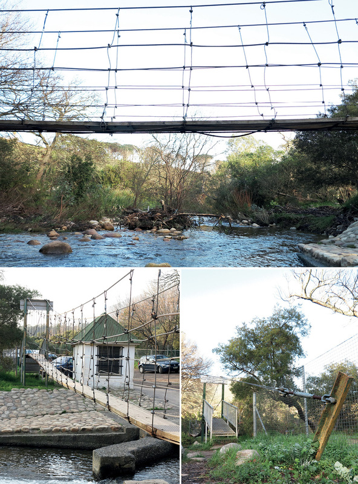
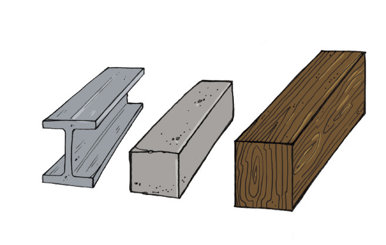
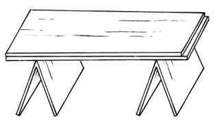
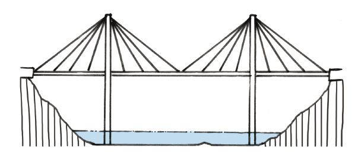
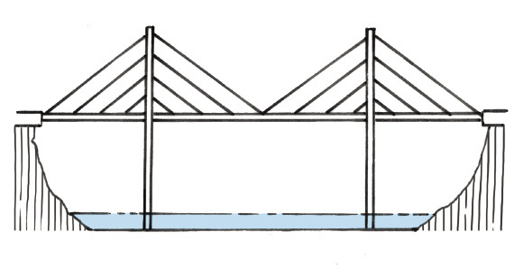
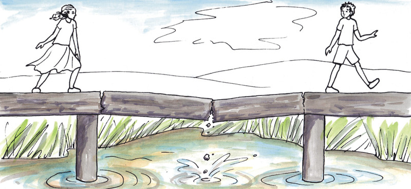

<div class="container">
  <div id="contents" class="col-md-12 main-content"><h1 xmlns="http://www.w3.org/1999/xhtml" id="toc-id-5">Geboue en brûe</h1>

 

<figcaption xmlns="http://www.w3.org/1999/xhtml">Figuur 1: Hoe kan die bouers stene bo-oor die
vensteropening lê?
</figcaption><figcaption xmlns="http://www.w3.org/1999/xhtml">Figuur 2: Verskillende maniere om die muur bo ’n venster-
of deuropening te ondersteun.
</figcaption> 

<figcaption xmlns="http://www.w3.org/1999/xhtml">Figuur 3: Wat is die doel van hierdie struktuur? Hoe word
dit ondersteun?
</figcaption><figcaption xmlns="http://www.w3.org/1999/xhtml">Figuur 4
</figcaption><b xmlns="http://www.w3.org/1999/xhtml">latei
</b> oor die vensteropening. ’n Latei is ’n stuk hout, staal
of beton wat die muur bo die opening kan ondersteun.
<p xmlns="http://www.w3.org/1999/xhtml" class="Body-box-no-indent">Lateie en voorwerpe soos
hierdie in figuur 5 word
<b>balke
</b> genoem.
</p>
<figcaption xmlns="http://www.w3.org/1999/xhtml">Figuur 5
</figcaption><i xmlns="http://www.w3.org/1999/xhtml">Valencia is haastig en benodig addisionele
tafels vir ’n bruilofsonthaal by haar
huis. Sy kan nie bekostig om regte tafels te koop nie, maar sy het ’n hele paar
breë planke wat sy as tafelblaaie kan gebruik.
</i>
<figcaption xmlns="http://www.w3.org/1999/xhtml">Figuur 6
</figcaption><li xmlns="http://www.w3.org/1999/xhtml" class="x--Body-investigation-hanging para-style-override-30">Hoe kan jy die
houtplanke gebruik om tafels te maak sonder dat dit nodig is om
die hout te sny? Maak hieronder ’n rowwe skets van jou plan.

<p>
</p>
<p class="x--Body-story para-style-override-31">
<i>Jaamiah het ’n plan. Sy
kan nie regtig die plan
se besonderhede verduidelik nie, maar hierdie
tekening wat sy gemaak het, wys hoe haar plan
gaan werk.
</i>
</p>
<figure><figcaption>Figuur 7
</figcaption></figure></li>
<li xmlns="http://www.w3.org/1999/xhtml" class="x--Body-investigation-hanging para-style-override-33">Valencia verstaan nie
regtig Jaamiah se tekening nie. Maak ’n beter tekening
wat duideliker wys hoe Jaamiah se tafels sal lyk. Jy hoef net ’n vinnige
vryhandskets te maak om te wys hoe die tafels sal lyk.


<p class="x--Body-Text">Om te verstaan hoe Jaamiah se tafel sal werk en om
te toets of dit goed gaan werk,
kan jy ’n klein model van die tafel bou. Gebruik geriffelde karton om dit te
doen.
</p>

<p class="x--Body-indent">Jy sal drie stukke geriffelde karton nodig hê, wat
elk omtrent 20 cm lank en
10 cm breed is. Besluit hoe jy die stukke vir die twee tafelblaaie en die twee
stutte
sal sny. Jy kan hulle met die riffels langs in die wydte sny, soos wat in figuur
8
gewys word, of met die riffels langs in die lengte, soos wat in figuur 9 gewys
word.
</p>


<figure><figcaption>Figuur 8: Riffels oor die breedte</figcaption></figure><figure><figcaption>Figuur 9: Riffels oor die lengte
</figcaption></figure><p class="x--Body-text-1-3 para-style-override-34">Bou jou model van ’n
tafel en toets dit om te kyk of
dit goed sal werk.
</p>
</li>
<li xmlns="http://www.w3.org/1999/xhtml" class="x--Body-investigation-hanging">Hoe moet die geriffelde karton
gesny word om
die sterkste blad vir die tafel te maak: met die
riffels in die breedte, of met die riffels in die
lengte?

<hr/><figure><figcaption>Figuur10</figcaption></figure></li>
<li xmlns="http://www.w3.org/1999/xhtml" class="x--Body-investigation-hanging--1-3-">Wys op Figuur 11 hoe die
riffels moet loop om die
sterkste stutte vir jou tafel te maak.


<figure><figcaption>Figuur 11
</figcaption></figure><p class="x--Body-text-1-3 para-style-override-37">Dink nou aan maniere om
die model van die
tafel sterker te maak sodat dit swaarder laste
kan dra. Die tafel in Figuur 12 is nie sterk
genoeg om die las te dra sonder dat dit buig
nie. Nog ’n manier om dit te doen is deur
meer stutte onder die tafelblad te plaas.
</p>

<figure><figcaption>Figuur 12</figcaption></figure><p class="x--Body-text-1-3 para-style-override-37">Veronderstel dat jy nog
’n strook geriffelde
karton het waarmee jy die tafel sterker kan
maak. Jy kan die karton as ’n tweede tafelblad
gebruik, soos in Figuur 13. Jy kan ook die
ekstra strook karton in twee stukke sny om
nog ’n stut vir die middel van die tafel te
maak, soos in Figuur 14.
</p>
</li>
<li xmlns="http://www.w3.org/1999/xhtml" class="x--Body-investigation-hanging--1-3- para-style-override-37">Watter manier,
waarop jy die ekstra karton
gaan gebruik, gaan die beste werk om die
tafel sterker te maak? Die manier gewys
in Figuur 13 of die manier gewys in Figuur
14?
</li>
<figcaption xmlns="http://www.w3.org/1999/xhtml">Figuur 13
</figcaption><figcaption xmlns="http://www.w3.org/1999/xhtml">Figuur 14</figcaption><figcaption xmlns="http://www.w3.org/1999/xhtml">Figuur 15
</figcaption><li xmlns="http://www.w3.org/1999/xhtml" class="x--Body-investigation-hanging">Maak ’n tekening op figuur 15 om
te wys hoe die brug dalk kan lyk.
</li>

<li xmlns="http://www.w3.org/1999/xhtml" class="x--Body-investigation-hanging">Kyk na jou tekening. Op watter
manier sal die brug ondersteun word sodat dit
nie sal meegee wanneer ’n swaar vragmotor daaroor ry nie?
<hr/></li>
<li xmlns="http://www.w3.org/1999/xhtml" class="x--Body-investigation-hanging">Van watter materiale dink jy moet
die brug gebou word?
<hr/></li>
<li xmlns="http://www.w3.org/1999/xhtml" class="x--Body-investigation-hanging">Hoe wyd moet die brug wees?
<hr/></li>
<li xmlns="http://www.w3.org/1999/xhtml" class="x--Body-investigation-hanging">Hoeveel motors kan gelyktydig op
die brug wees?
<hr/></li>
<figcaption xmlns="http://www.w3.org/1999/xhtml">’n balk-en-kolombrug</figcaption><figcaption xmlns="http://www.w3.org/1999/xhtml">'n boogbrug</figcaption><figcaption xmlns="http://www.w3.org/1999/xhtml">’n vakwerkbrug</figcaption><figcaption xmlns="http://www.w3.org/1999/xhtml">’n hangbrug</figcaption><figcaption xmlns="http://www.w3.org/1999/xhtml">’n vrydraersbrug</figcaption><figcaption xmlns="http://www.w3.org/1999/xhtml">’n kabelankerbrug van die waaiertipe</figcaption><figcaption xmlns="http://www.w3.org/1999/xhtml">’n kabelankerbrug van die harptipe</figcaption><figcaption xmlns="http://www.w3.org/1999/xhtml">Figure 17</figcaption><b xmlns="http://www.w3.org/1999/xhtml">hangbrug
</b> tussen twee skoollessenaars
bou. As jy dit doen, gebruik jy die
kleefband as <b xmlns="http://www.w3.org/1999/xhtml"> kabels.
</b>
<b xmlns="http://www.w3.org/1999/xhtml">dek</b> te
vorm.

<figcaption xmlns="http://www.w3.org/1999/xhtml">Figuur 18
</figcaption><li xmlns="http://www.w3.org/1999/xhtml" value="6">Dink jy die hangbrug, soos wat gewys
word in figuur 17, sal sterk genoeg
wees om ’n klein voëltjie wat daaroor
loop te ondersteun?
</li>
<b xmlns="http://www.w3.org/1999/xhtml"> vrydraerbrug
</b>tussen twee skoollessenaars bou. Plaas twee
stukke geriffelde karton op die lessenaars, soos die blou voorwerpe op die
tekening hieronder. Plaas ’n voorwerp soos ’n boek op die een end van elk van
die
kartonvelle, sodat hulle nie kan afval nie.
<figcaption xmlns="http://www.w3.org/1999/xhtml">Figuur 19
</figcaption><li xmlns="http://www.w3.org/1999/xhtml" value="7">Hoe kan jy die vrydraerbrug voltooi sonder om die kartonvelle
verder uit te
skuif en sonder om die lessenaars te beweeg?
<hr/></li>
<b xmlns="http://www.w3.org/1999/xhtml">hangbrug 
</b>word die kabels aan die twee kante <b xmlns="http://www.w3.org/1999/xhtml">geanker</b>, op
dieselfde manier waarop jy jou kleefbandstroke op die blaaie van die twee
lessenaars vasgeplak het. By die meeste hangbrûe hang die dek aan die
kabels.
Ons kan ook sê die dek word <i xmlns="http://www.w3.org/1999/xhtml">vanaf die kabels gesuspendeer</i>.

 
<figcaption xmlns="http://www.w3.org/1999/xhtml">Figuur 20</figcaption>
<b xmlns="http://www.w3.org/1999/xhtml">kabelankerbrug </b> word die dek ook vanaf die kabels gesuspendeer, maar die kabels is aan ondersteunende kolomme geanker, nie aan twee punte aan elke kant van die brug nie. Om ’n eenvoudige model van ’n kabelankerbrug te maak, kan jy ’n paar stukkies tou aan ’n vel geriffelde karton vasplak. <figcaption xmlns="http://www.w3.org/1999/xhtml">Stap A</figcaption>
    
<figcaption xmlns="http://www.w3.org/1999/xhtml">Stap B</figcaption>

<figcaption xmlns="http://www.w3.org/1999/xhtml">Stap C</figcaption>
<li xmlns="http://www.w3.org/1999/xhtml" class="x--Body-investigation-hanging--1-3-">Dink jy dit sal ’n goeie
idee wees om ’n glasblad
as tafelblad te gebruik?
<hr/></li>
<figcaption xmlns="http://www.w3.org/1999/xhtml">Figuur 22: ’n Tafel met ’n glasblad</figcaption><li xmlns="http://www.w3.org/1999/xhtml" value="2">Watter materiaal is gebruik om die
pote te maak van die stoel waarop jy sit?
<hr/></li>
<li xmlns="http://www.w3.org/1999/xhtml" class="x--Body-investigation-hanging">Waarom sal dit nie werk as jy
rubberpype vir stoelpote probeer gebruik nie?
<hr/><p class="x--Body-text-1-3">Tom het hierdie plan gemaak vir ’n model van ’n
tafel
met ’n ronde blad. Tom se plan is om drie bottels op
hul nekke staan te maak, en ’n sirkelvormige stuk
karton bo-op hulle te plaas
</p>


<figure><figcaption>Figuur 23: ’n Tafel met ’n ronde
blad

</figcaption></figure></li>

<li xmlns="http://www.w3.org/1999/xhtml" class="x--Body-investigation-hanging">Verduidelik waarom dit nie so goed
sal werk nie.
<hr/></li>
<p xmlns="http://www.w3.org/1999/xhtml">Van die onderdele van die struktuur, of struktuurdele, kan
<b>versplinter
</b>of uitmekaar breek.

Van die onderdele van die struktuur of struktuurdele kan
<b>buig</b>.
Van die onderdele van die struktuur of struktuurdele kan
<b>omtuimel</b>.
</p>
<li xmlns="http://www.w3.org/1999/xhtml" value="5">Die prente hieronder wys verskillende maniere waarop
brûe kan
misluk. Beskryf wat
in elkeen van hierdie gevalle verkeerd gegaan het, en hoe dit voorkom kon word.


<figure> 

<figcaption>Figuur 24
</figcaption></figure><hr/><figure> 

<figcaption>Figuur 25
</figcaption></figure><hr/><figure><figcaption>Figuur 26
</figcaption></figure></li>
<li xmlns="http://www.w3.org/1999/xhtml" class="x--Body-investigation-hanging">’n Ontwerp vir ’n klein tafeltjie
word hier gewys.
Wat kan alles verkeerd gaan en maak dat die tafeltjie
nie werk nie?
<hr/><figure><figcaption>Figuur 27
</figcaption></figure></li>
<li xmlns="http://www.w3.org/1999/xhtml" class="x--Body-investigation-hanging">Die prente op die teenoorgestelde
bladsy wys ’n hangbrug en ’n boogbrug.
In die geval van ’n hangbrug hang die dek van die brug aan die kabels wat die
vrag dra. Verduidelik in watter opsig ’n boogbrug van ’n hangbrug verskil.
<hr/></li>
 

<figcaption xmlns="http://www.w3.org/1999/xhtml">Figuur 28
</figcaption><figcaption xmlns="http://www.w3.org/1999/xhtml">Figuur 29
</figcaption><li xmlns="http://www.w3.org/1999/xhtml" class="x--Body-investigation-hanging">Waar word lateie in huise gebruik
en vir watter doel?
<hr/></li>
<li xmlns="http://www.w3.org/1999/xhtml" class="x--Body-investigation-hanging">Kan boë in plaas van lateie
gebruik word wanneer huise ontwerp en gebou
word? Maak ’n vryhandskets om jou antwoord te illustreer.
<hr/></li>
<li xmlns="http://www.w3.org/1999/xhtml" class="x--Body-investigation-hanging">Wat is die verskil tussen ’n
balk-en-kolombrug en ’n boogbrug?
<hr/></li>
<li xmlns="http://www.w3.org/1999/xhtml" class="x--Body-investigation-hanging">Wanneer sal jy ’n hangbrug gebruik
in plaas van ’n balk-en-kolombrug.
<hr/></li>

  </div>
</div>